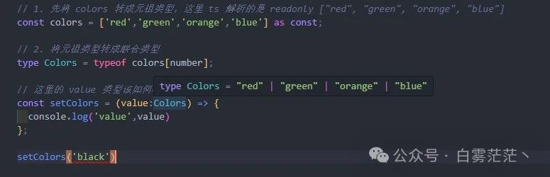

2024-07-14 17:54:13 · YinHao
在我们使用 TypeScript 开发业务的时候，也许你会遇到一个这样的问题：我们如何根据一个数组的值得到一个联合类型？
这里向大家介绍一个开发小技巧：使用元组生成联合类型
我们看下面一段 ts 代码：
const colors = ["red", "green", "orange", "blue"]; // 这里 ts 解析的是 string[]
// 这里的 value 类型该如何标注，使它的值只能是 colors 中的值
const setColors = (value: ?) => {
console.log("value", value);
};
我们总不能手动去写成这样：
type Colors = "red" | "green" | "orange" | "blue";
这样显得我们很呆，我们应该根据 colors 自动生成一个联合类型，做法也很简单：
// 1. 先将 colors 转成元组类型，这里 ts 解析的是 readonly ["red", "green", "orange", "blue"]
const colors = ["red", "green", "orange", "blue"] as const;
// 2. 将元组类型转成联合类型
type Colors = (typeof colors)[number];
// 这里的 value 类型该如何标注，使它的值只能是 colors 中的值
const setColors = (value: Colors) => {
console.log("value", value);
};
这样我们就可以完成 ts 的类型检查了：
